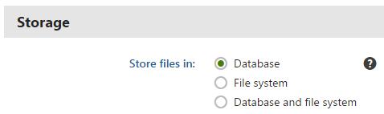

Storing files
Page attachments (and their history), CMS.File pages, metafiles, avatars, and forum attachments can be physically stored in the file system, in the database, or both. You can define this in the Settings application in the System -> Files -> Storage category using the Store files in setting.

Configuring file storage settings
You can choose one of the following options:
Database – the files are stored in the database. This option is worse in performance, but does not require the Modify permission for the file system and allows you to easily backup the uploaded files as part of your database.
File system – the files are stored in the configured folder on your disk. This option provides the best performance. However, the Modify permissions on the disk must be granted to the ASP.NET account on your machine, which is not always possible. See Disk permissions problems for the process of granting the Modify permission.
Database and file system – this option combines the advantages of both options. It provides the same performance as the file system-only option since the files are stored in the file system.
Page attachments and metafiles location
When storing files in the file system, attachments of pages without workflow are saved in the ~/<site code name>/files folder. Metafiles are saved in the ~/<site code name>/metafiles folder. You can configure the location of these folders by using the Settings -> System -> Files -> Files folder settings option. Attachments of pages under workflow (i.e., attachment histories) are saved in the ~/App_Data/VersionHistory/Attachments folder regardless of the Files folder setting. Learn more in Settings - Files.
Note: When you change the location of the file folder, the system does NOT automatically move any existing files to the new location. To ensure that the system can access the files, you need to manually move them from the old location to the new one in the file system.
Form files location
Files uploaded by website users into forms are always stored in the file system. The default location is ~/<site code name>/BizFormFiles. You can customize the location in Settings -> System -> Files -> Custom form files folder.
Files may be submitted as part of form records, typically when a form contains an uploader type field (specifically the Upload file field type/form control). You can adjust the following settings related to files submitted through forms and their storage in the file system:
|
Storage |
|
|
Custom form files folder |
Folder where files uploaded via forms are stored. You can use:
If no value is entered, the files are stored in the ~/<site code name>/BizFormFiles/ folder. |
|
Use site-specific subfolders for custom form files folder |
This setting is only applied when a Custom form files folder is configured. If enabled, attachment files will be stored in a sub-folder named as the site code name under the custom files folder, i.e. <custom BizForm files folder>/<site code name>. It is useful for better orientation in files when multiple sites are running in the system. |
|
Security |
|
|
Upload extensions |
Specifies which extensions are allowed for uploaded files. You can restrict the types of uploaded files by entering a limited list of extensions separated by semicolons, for example: gif;jpg;doc;pdf This allows you to block users from uploading potentially dangerous files, such as ASPX scripts. If no value is specified, uploading is allowed for all file types. |
Media library files location
Files stored in media libraries are always stored in the file system. The default location is ~/<site code name>/media, while the location of the folder can be customized in Settings -> Content -> Media -> Media libraries folder, as described in Configuring media libraries.